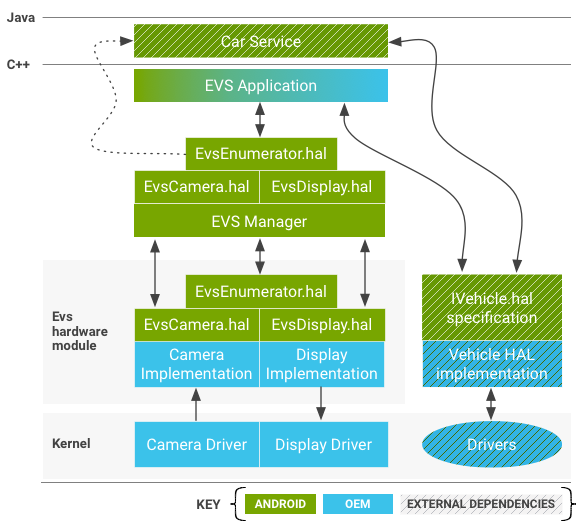
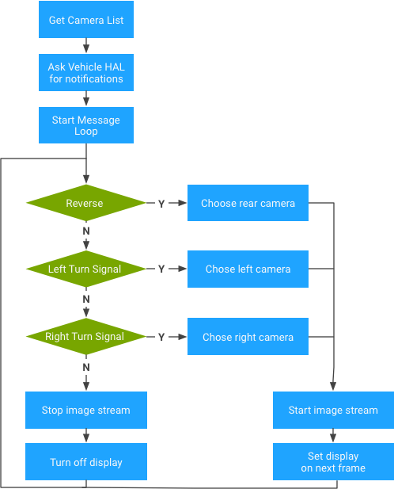
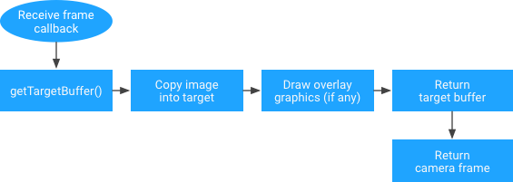

Android 8.0 includes an automotive HIDL Hardware Abstraction Layer (HAL) that provides for imagery capture and display very early in the Android boot process and continues functioning for the life of the system. The HAL includes the exterior view system (EVS) stack and is typically used to support rear-view camera and surround view displays in vehicles with Android-based In-Vehicle Infotainment (IVI) systems. EVS also enables advanced features to be implemented in user applications.
Android 8.0 also includes an EVS-specific capture and display driver
interface (in /hardware/interfaces/automotive/evs/1.0). While it is
possible to build a rear view camera application on top of existing Android
camera and display services, such an application would likely run too late in
the Android boot process. Using a dedicated HAL enables a streamlined interface
and makes it clear what an OEM needs to implement to support the EVS stack.
System components
EVS includes the following system components:
EVS application
A sample C++ EVS application
(/packages/services/Car/evs/app) serves as a reference
implementation. This application is responsible for requesting video frames from
the EVS Manager and sending finished frames for display back to the EVS Manager.
It expects to be started by init as soon as EVS and Car Service are available,
targeted within two (2) seconds of power on. OEMs can modify or replace the EVS
application as desired.
EVS Manager
The EVS Manager (/packages/services/Car/evs/manager) provides
the building blocks needed by an EVS application to implement anything from a
simple rear view camera display to a 6DOF multi-camera rendering. Its interface
is presented through HIDL and is built to accept multiple concurrent clients.
Other applications and services (specifically the Car Service) can query the EVS
Manager state to find out when the EVS system is active.
EVS HIDL interface
The EVS system, both the camera and the display elements, is defined in the
android.hardware.automotive.evs package. A sample implementation
that exercises the interface (generates synthetic test images and validates the
images make the round trip) is provided in
/hardware/interfaces/automotive/evs/1.0/default.
The OEM is responsible for implementing the API expressed by the .hal files
in /hardware/interfaces/automotive/evs. Such implementations are
responsible for configuring and gathering data from physical cameras and
delivering it via shared memory buffers recognizable by Gralloc. The display
side of the implementation is responsible for providing a shared memory buffer
that can be filled by the application (usually via EGL rendering) and presenting
the finished frames in preference to anything else that might want to appear on
the physical display. Vendor implementations of the EVS interface may be stored
under /vendor/… /device/… or hardware/… (e.g.,
/hardware/[vendor]/[platform]/evs).
Kernel drivers
A device that supports the EVS stack requires kernel drivers. Instead of
creating new drivers, OEMs have the option to support EVS-required features via
existing camera and/or display hardware drivers. Reusing drivers could be
advantageous, especially for display drivers where image presentation may
require coordination with other active threads. Android 8.0 includes a v4l2-based
sample driver (in packages/services/Car/evs/sampleDriver) that
depends on the kernel for v4l2 support and on SurfaceFlinger for presenting the
output image.
EVS hardware interface description
The section describes the HAL. Vendors are expected to provide implementations of this API adapted for their hardware.
IEvsEnumerator
This object is responsible for enumerating the available EVS hardware in the system (one or more cameras and the single display device).
getCameraList() generates (vec<CameraDesc> cameras);
Returns a vector containing descriptions for all cameras in the system. It is
assumed the set of cameras is fixed and knowable at boot time. For details on
camera descriptions, see CameraDesc.
openCamera(string camera_id) generates (IEvsCamera camera);
Obtains an interface object used to interact with a specific camera
identified by the unique camera_id string. Returns a NULL on failure.
Attempts to reopen a camera that is already open cannot fail. To avoid race
conditions associated with application startup and shutdown, reopening a camera
should shut down the previous instance so the new request can be fulfilled. A
camera instance that has been preempted in this way must be put in an inactive
state, awaiting final destruction and responding to any request to affect the
camera state with a return code of OWNERSHIP_LOST.
closeCamera(IEvsCamera camera);
Releases the IEvsCamera interface (and is the opposite of the
openCamera() call). If streaming is not already stopped, this call
automatically stops streaming.
openDisplay() generates (IEvsDisplay display);
Obtains an interface object used to exclusively interact with the system's
EVS display. Only one client may hold a functional instance of IEvsDisplay at
time. Similar to the aggressive open behavior described in
openCamera, a new IEvsDisplay object may be created at any time and
will disable any previous instances. Invalidated instances continue to exist and
respond to function calls from their owners, but must perform no mutating
operations when dead. Eventually, the client application is expected to notice
the OWNERSHIP_LOST error return codes and close and release the
dead interface.
closeDisplay(IEvsDisplay display);
Releases the IEvsDisplay interface (and is the opposite of the
openDisplay() call). Outstanding buffers received via
getTargetBuffer() calls must be returned to the display before
closing the display.
getDisplayState() generates (DisplayState state);
Gets the current display state. The HAL implementation should report the
actual current state, which might differ from the most recently requested state.
The logic responsible for changing display states should exist above the device
layer, making it undesirable for the HAL implementation to spontaneously change
display states. If the display is not currently held by any client (by a call to
openDisplay), then this function returns NOT_OPEN. Otherwise, it
reports the current state of the EVS Display (see
IEvsDisplay API).
struct CameraDesc {
string camera_id;
int32 vendor_flags; // Opaque value
}
camera_id. A string that uniquely identifies a given camera. Can be the kernel device name of the device or a name for the device, such as rearview. The value for this string is chosen by the HAL implementation and used opaquely by the stack above.vendor_flags. A method for passing specialized camera information opaquely from the driver to a custom EVS application. It is passed uninterpreted from the driver up to the EVS application, which is free to ignore it.
IEvsCamera
This object represents a single camera and is the primary interface for capturing images.
getId() generates (hidl_string cameraId);
Returns the string id of this camera. This must be the same value as reported
in the camera_id field of the CameraDesc structure by
EvsEnumerator::getCameraList().
setMaxFramesInFlight(int32 bufferCount) generates (EvsResult result);
Specifies the depth of the buffer chain the camera is asked to support. Up to
this many frames may be held concurrently by the client of IEvsCamera. If this
many frames have been delivered to the receiver without being returned by
doneWithFrame, the stream skips frames until a buffer is returned
for reuse. It is legal for this call to come at any time, even while streams are
already running, in which case buffers should be added or removed from the chain
as appropriate. If no call is made to this entry point, the IEvsCamera supports
at least one frame by default; with more acceptable.
If the requested bufferCount cannot be accommodated, the function returns
BUFFER_NOT_AVAILABLE or other relevant error code. In this case,
the system continues to operate with the previously-set value.
startVideoStream(IEvsCameraStream receiver) generates (EvsResult result);
Requests delivery of EVS camera frames from this camera. The IEvsCameraStream
begins receiving periodic calls with new image frames until
stopVideoStream() is called. Frames must begin being delivered
within 500ms of the startVideoStream call and after starting, must
generated at a minimum of 10 FPS. The time required to start the video stream
effectively counts against any rear view camera startup time requirement. If the
stream is not started, an error code must be returned; otherwise OK is returned.
doneWithFrame(BufferDesc buffer) generates (EvsResult result);
Returns a frame that was delivered by to the IEvsCameraStream. When done
consuming a frame delivered to the IEvsCameraStream interface, the frame must be
returned to the IEvsCamera for reuse. A small, finite number of buffers are
available (possibly as small as one), and if the supply is exhausted, no further
frames are delivered until a buffer is returned, potentially resulting in
skipped frames (a buffer with a null handle denotes the end of a stream and does
not need to be returned through this function). Returns OK on success, or
appropriate error code potentially including INVALID_ARG or
BUFFER_NOT_AVAILABLE.
stopVideoStream();
Stops the delivery of EVS camera frames. Because delivery is asynchronous,
frames may continue to arrive for some time after this call returns. Each frame
must be returned until the closure of the stream is signaled to the
IEvsCameraStream. It is legal to call stopVideoStream on a stream
that has already been stopped or never started, in which cases it is ignored.
getExtendedInfo(int32 opaqueIdentifier) generates (int32 value);
Requests driver-specific information from the HAL implementation. Values
allowed for opaqueIdentifier are driver-specific, but no value
passed may crash the driver. The driver should return 0 for any unrecognized
opaqueIdentifier.
setExtendedInfo(int32 opaqueIdentifier, int32 opaqueValue) generates (EvsResult result);
Sends a driver-specific value to the HAL implementation. This extension is
provided only to facilitate vehicle-specific extensions and no HAL
implementation should require this call to function in a default state. If the
driver recognizes and accepts the values, OK should be returned; otherwise
INVALID_ARG or other representative error code should be returned.
struct BufferDesc {
uint32 width; // Units of pixels
uint32 height; // Units of pixels
uint32 stride; // Units of pixels
uint32 pixelSize; // Size of single pixel in bytes
uint32 format; // May contain values from android_pixel_format_t
uint32 usage; // May contain values from Gralloc.h
uint32 bufferId; // Opaque value
handle memHandle; // gralloc memory buffer handle
}
Describes an image passed through the API. The HAL drive is responsible for
filling out this structure to describe the image buffer and the HAL client
should treat this structure as read-only. The fields contain enough information
to allow the client to reconstruct an ANativeWindowBuffer object,
as may be required to use the image with EGL via the
eglCreateImageKHR() extension.
width. The width in pixels of the presented image.height. The height in pixels of the presented image.stride. Number of pixels each row actually occupies in memory, accounting for any padding for alignment of rows. Expressed in pixels to match the convention adopted by gralloc for its buffer descriptions.pixelSize. Number of bytes occupied by each individual pixel, enabling computation of the size in bytes necessary to step between rows in the image (stridein bytes =stridein pixels *pixelSize).format. The pixel format used by the image. The format provided must be compatible with the platform's OpenGL implementation. To pass compatibility testing,HAL_PIXEL_FORMAT_YCRCB_420_SPshould be preferred for camera usage and andRGBAshould be preferred for display.usage. Usage flags set by the HAL implementation. HAL clients are expected to pass these unmodified (for details, refer toGralloc.hrelated flags).bufferId. A unique value specified by the HAL implementation to allow a buffer to be recognized after a round trip through the HAL APIs. The value stored in this field may be arbitrarily chosen by the HAL implementation.memHandle. The handle for the underlying memory buffer that contains the image data. The HAL implementation might choose to store a Gralloc buffer handle here.
IEvsCameraStream
The client implements this interface to receive asynchronous video frame deliveries.
deliverFrame(BufferDesc buffer);
Receives calls from the HAL each time a video frame is ready for inspection.
Buffer handles received by this method must be returned via calls to
IEvsCamera::doneWithFrame(). When the video stream is stopped via a
call to IEvsCamera::stopVideoStream(), this callback might continue
as the pipeline drains. Each frame must still be returned; when the last frame
in the stream has been delivered, a NULL bufferHandle will be delivered,
signifying the end of the stream and no further frame deliveries occur. The NULL
bufferHandle itself does not need to be sent back via
doneWithFrame(), but all other handles must be returned
While proprietary buffer formats are technically possible, compatibility testing requires the buffer be in one of four supported formats: NV21 (YCrCb 4:2:0 Semi-Planar), YV12 (YCrCb 4:2:0 Planar), YUYV (YCrCb 4:2:2 Interleaved), RGBA (32 bit R:G:B:x). The selected format must be a valid GL texture source on the platform's GLES implementation.
The application should not rely on any correspondence
between the bufferId field and the memHandle in the
BufferDesc structure. The bufferId values are
essentially private to the HAL driver implementation, and it may use (and reuse)
them as it sees fit.
IEvsDisplay
This object represents the Evs display, controls the state of the display, and handles the actual presentation of images.
getDisplayInfo() generates (DisplayDesc info);
Returns basic information about the EVS display provided by the system (see DisplayDesc).
setDisplayState(DisplayState state) generates (EvsResult result);
Sets the display state. Clients may set the display state to express the desired state, and the HAL implementation must gracefully accept a request for any state while in any other state, although the response may be to ignore the request.
Upon initialization, the display is defined to start in the
NOT_VISIBLE state, after which the client is expected to request
the VISIBLE_ON_NEXT_FRAME state and begin providing video. When the
display is no longer required, the client is expected to request the
NOT_VISIBLE state after passing the last video frame.
It is valid for any state to be requested at any time. If the display is
already visible, it should remain visible if set to
VISIBLE_ON_NEXT_FRAME. Always returns OK unless the requested state
is an unrecognized enum value, in which case INVALID_ARG is
returned.
getDisplayState() generates (DisplayState state);
Gets the display state. The HAL implementation should report the actual current state, which might differ from the most recently requested state. The logic responsible for changing display states should exist above the device layer, making it undesirable for the HAL implementation to spontaneously change display states.
getTargetBuffer() generates (handle bufferHandle);
Returns a handle to a frame buffer associated with the display. This buffer
may be locked and written to by software and/or GL. This buffer must be returned
via a call to returnTargetBufferForDisplay() even if the display is
no longer visible.
While proprietary buffer formats are technically possible, compatibility testing requires the buffer be in one of four supported formats: NV21 (YCrCb 4:2:0 Semi-Planar), YV12 (YCrCb 4:2:0 Planar), YUYV (YCrCb 4:2:2 Interleaved), RGBA (32 bit R:G:B:x). The selected format must be a valid GL render target on the platform's GLES implementation.
On error, a buffer with a null handle is returned, but such a buffer does not
need to be passed back to returnTargetBufferForDisplay.
returnTargetBufferForDisplay(handle bufferHandle) generates (EvsResult result);
Tells the display the buffer is ready for display. Only buffers retrieved
through a call to getTargetBuffer() are valid for use with this
call, and the contents of the BufferDesc may not be modified by the
client application. After this call, the buffer is no longer valid for use by
the client. Returns OK on success, or appropriate error code potentially
including INVALID_ARG or BUFFER_NOT_AVAILABLE.
struct DisplayDesc {
string display_id;
int32 vendor_flags; // Opaque value
}
Describes the basic properties of an EVS display and required by an EVS implementation. The HAL is responsible for filling out this structure to describe the EVS display. Can be a physical display or a virtual display that is overlaid or mixed with another presentation device.
display_id. A string that uniquely identifies the display. This could be the kernel device name of the device, or a name for the device, such as "rearview". The value for this string is chosen by the HAL implementation and used opaquely by the stack above.vendor_flags. A method for passing specialized camera information opaquely from the driver to a custom EVS Application. It is passed uninterpreted from the driver up to the EVS Application, which is free to ignore it.
enum DisplayState : uint32 {
NOT_OPEN, // Display has not been “opened” yet
NOT_VISIBLE, // Display is inhibited
VISIBLE_ON_NEXT_FRAME, // Will become visible with next frame
VISIBLE, // Display is currently active
DEAD, // Display is not available. Interface should be closed
}
Describes the state of the EVS display, which can be disabled (not
visible to the driver) or enabled (showing an image to the driver).
Includes a transient state where the display is not visible yet but is prepared
to become visible with the delivery of the next frame of imagery via the
returnTargetBufferForDisplay() call.
EVS Manager
The EVS Manager provides the public interface to the EVS system for collecting and presenting external camera views. Where hardware drivers allow only one active interface per resource (camera or display), the EVS Manager facilitates shared access to the cameras. A single primary EVS application is the first client of the EVS Manager, and is the only client permitted to write display data (additional clients can be granted read-only access to camera images).
The EVS Manager implements the same API as the underlying HAL drivers and provides expanded service by supporting multiple concurrent clients (more than one client can open a camera through the EVS Manager and receive a video stream).
Applications see no differences when operating through the EVS Hardware HAL implementation or the EVS Manager API except that the EVS Manager API allows concurrent camera stream access. The EVS Manager is, itself, the one allowed client of the EVS Hardware HAL layer, and acts as a proxy for the EVS Hardware HAL.
The following sections describe only those calls that have a different (extended) behavior in the EVS Manager implementation; remaining calls are identical to EVS HAL descriptions.
IEvsEnumerator
openCamera(string camera_id) generates (IEvsCamera camera);
Obtains an interface object used to interact with a specific camera
identified by the unique camera_id string. Returns a NULL on failure.
At the EVS Manager layer, as long as sufficient system resources are available,
a camera that is already open may be opened again by another process, allowing
teeing of the video stream to multiple consumer applications. The
camera_id strings at the EVS Manager layer are the same as those
reported to the EVS Hardware layer.
IEvsCamera
The EVS Manager provided IEvsCamera implementation is internally virtualized so operations on a camera by one client do not affect other clients, which retain independent access to their cameras.
startVideoStream(IEvsCameraStream receiver) generates (EvsResult result);
Starts video streams. Clients may independently start and stop video streams on the same underlying camera. The underlying camera starts when the first client starts.
doneWithFrame(uint32 frameId, handle bufferHandle) generates (EvsResult result);
Returns a frame. Each client must return their frames when they are done, but are permitted to hold onto their frames for as long as they desire. When the frame count held by a client reaches its configured limit, it will not receive any more frames until it returns one. This frame skipping does not affect other clients, which continue to receive all frames as expected.
stopVideoStream();
Stops a video stream. Each client can stop its video stream any time without affecting other clients. The underlying camera stream at the hardware layer is stopped when the last client of a given camera stops its stream.
setExtendedInfo(int32 opaqueIdentifier, int32 opaqueValue) generates (EvsResult result);
Sends a driver-specific value, potentially enabling one client to affect another client. Because the EVS Manager cannot understand the implications of vendor-defined control words, they are not virtualized and any side effects apply to all clients of a given camera. For example, if a vendor used this call to change frame rates, all clients of the affected hardware layer camera would receive frames at the new rate.
IEvsDisplay
Only one owner of the display is allowed, even at the EVS Manager level. The Manager adds no functionality and simply passess the IEvsDisplay interface directly through to the underlying HAL implementation.
EVS application
Android 8.0 includes a native C++ reference implementation of an EVS application that communicates with the EVS Manager and the Vehicle HAL to provide basic rear view camera functions. The application is expected to start very early in the system boot process, with suitable video shown depending on the available cameras and the state of the car (gear and turn signal state). OEMs can modify or replace the EVS application with their own vehicle-specific logic and presentation.

Because image data is presented to the application in a standard graphics buffer, the application is responsible for moving the image from the source buffer into the output buffer. While this introduces the cost of a data copy, it also offers the opportunity for the application to render the image into the display buffer in any fashion it desires.
For example, the application may choose to move the pixel data itself, potentially with an inline scale or rotation operation. The application could also choose to use the source image as an OpenGL texture and render a complex scene to the output buffer, including virtual elements such as icons, guidelines, and animations. A more sophisticated application may also select multiple concurrent input cameras and merge them into the single output frame (such as for use in a top-down, virtual view of vehicle surroundings).
Beyond Android 8.0
Android 8.0 provides support for basic rearview camera applications, but Google recognizes several use cases that may become the basis for future extensions to the EVS stack.
- Surround view. To address use cases where vehicles have multiple cameras around the car body, Google is considering enhancing the EVS application to warp video from multiple concurrent cameras into a 3D presentation suitable for tight quarter maneuvering (such as parking in a narrow space).
- User input. In Android 8.0, it is the responsibility of the application to acquire and parse input events from the kernel device. Reading user input early in the boot cycle can be accomplished by interacting with the dev/event# kernel devices, and reading events from these streams does not interfere with Android InputFlinger's ability to monitor these same input streams. To address use cases for input events, Google is considering a simple EVS interface that supports single-touch events.